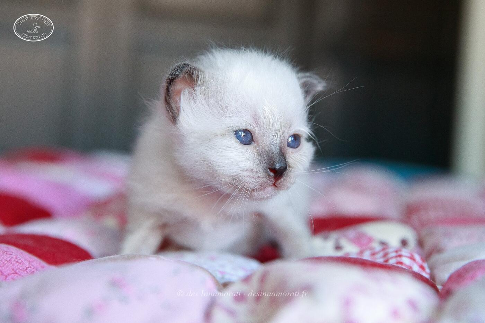

RobeMâle · Seal point
StatutAdopté
Album13 photos, de juillet 2018 à octobre 2018


Photos réduites et marquées. Elles appartiennent à la Chatterie des Innamorati et ne peuvent pas être reprises dans une annonce.

Photos réduites et marquées. Elles appartiennent à la Chatterie des Innamorati et ne peuvent pas être reprises dans une annonce.